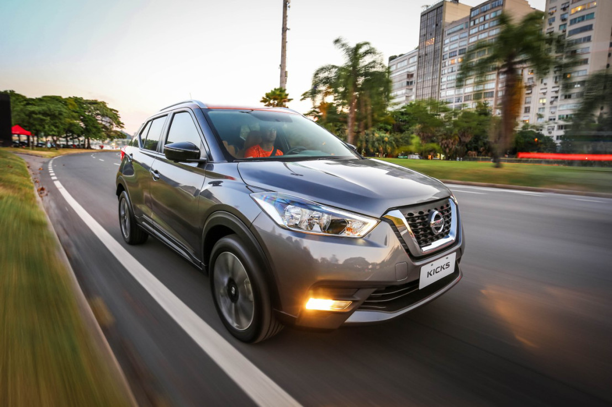
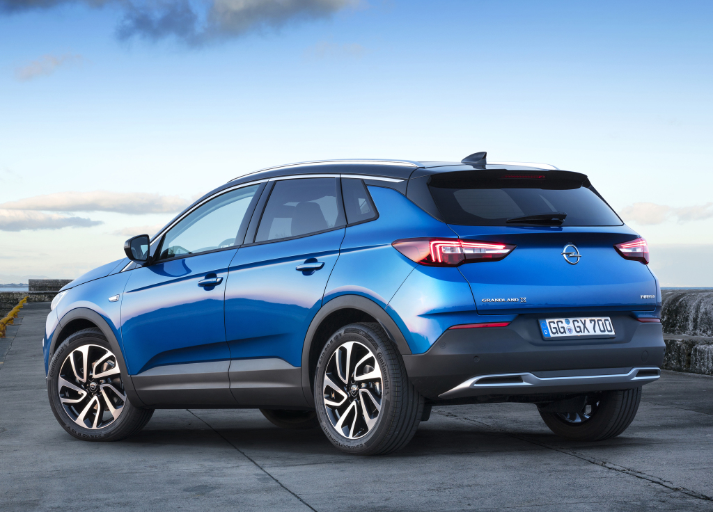
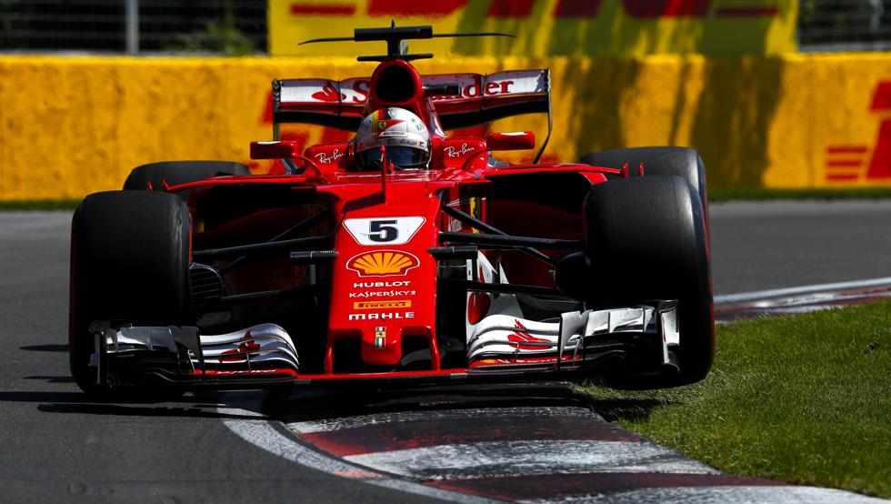
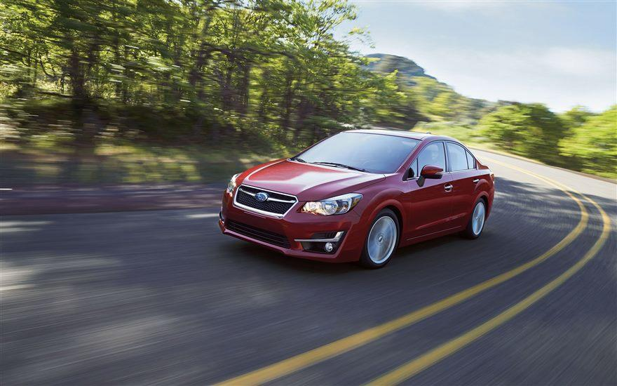
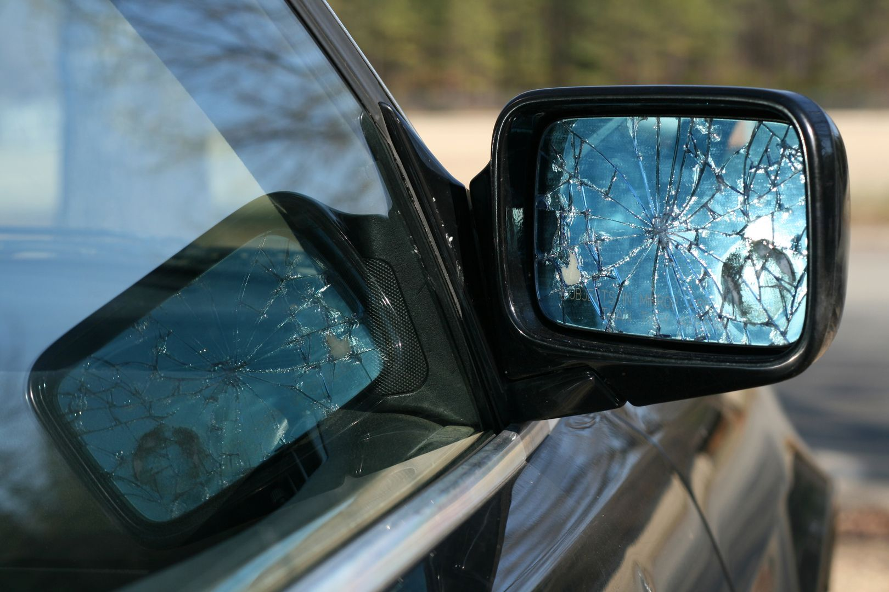
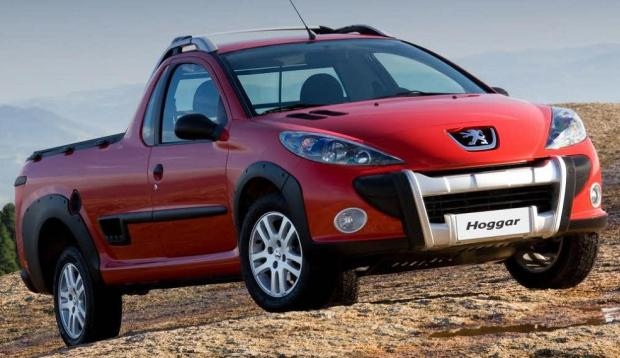

El nuevo Honda Accord se hará oficial el próximo 14 de julio

La Alianza Renault-Nissan a por el liderato de ventas mundiales
La lucha por ocupar el primer puesto como el mayor fabricante de coches del mundo está más viva que nunca. El año pasado el Grupo Volkswagen logró arrebatarle el cetro a la japonesa Toyota. Sin embargo el escándalo del dieselgate y otras cuestiones relativas a adaptación de producto en los principales mercados mundiales les puede ocasionar más problemas a los alemanes.

Este es el aberrante producto de una noche de pasión entre un Ford Mustang y una RAM 1500 4×4
El coche – por así llamarlo – que tenéis en pantalla es el productos de una noche de pasión entre un Ford Mustang descapotable de última generación y una RAM 1500 4×4. Es absolutamente cierto: es un coche creado bajo encargo, encargado por el “jeque arco iris”, Sheikh Hamad bin Hamdan al Nahyan.

Gran Premio de Europa F1 2017: Resultados de los entrenamientos libres
Comienza el fin de semana en Bakú para celebrar el GP de Europa de Fórmula 1 2017. Un circuito urbano con una pista muy estrecha entre las calles de este fantástico trazado que discurre por el casco antiguo de la ciudad con ese emblemático castillo como testigo de la carrera.
Libres Moto2 Assen 2017: Morbidelli recupera el tono
Franco Morbidelli recupera el tono y se adjudica los Libres Moto2 Assen 2017. Muy buen viernes del líder de la categoría intermedia, que parece que en Holanda puede volver a recuperar la buena senda del inicio de campeonato y que se vio truncada en Mugello y Montmeló.
El Renault Mégane RS tendrá dos “chasis” diferentes, ¡y cuatro ruedas directrices!
El Renault Mégane RS está a la vuelta de la esquina. O más bien, a la vuelta de vacaciones, ya que será presentado en septiembre, en el Salón del Automóvil de Frankfurt. El compacto deportivo se perfila como uno de los Renault más eficaces.

Estados Unidos proponen autos que se comuniquen entre sí

Descubren un millón de euros en Francia en un coche español
La Policía francesa se incautó de más de un millón de euros, hallados es un coche de procedencia española, y que se dirigía a Alemania. El conductor del vehículo y su acompañante, dos hermanos de 34 y 39 años fueron detenidos. El operativo tuvo lugar el pasado 15 de junio en la autopista A36 cerca de la ciudad de Montbéliard, en Doubs (Francia).

Peugeot ya tiene su pick up para ciertos mercados emergentes
Cuando Carlos Tavares llegó a la dirección del Grupo PSA (Peugeot, Citroën y DS) las cosas no pintaban bien para el consorcio. Para solucionar el desaguisado que había montado, se sanearon las cuentas y se presentó el plan de reestructuración “Push to Pass”. En dicho documento se concretaba qué pasaría con las gamas de las tres marcas, que forman el grupo galo.